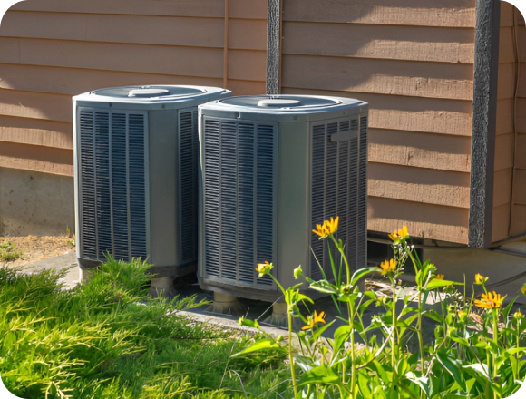
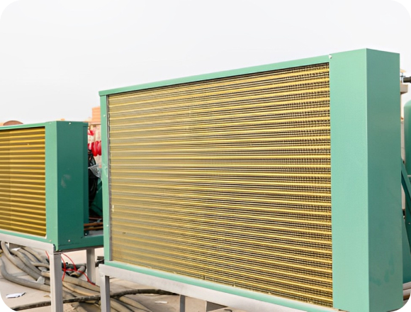
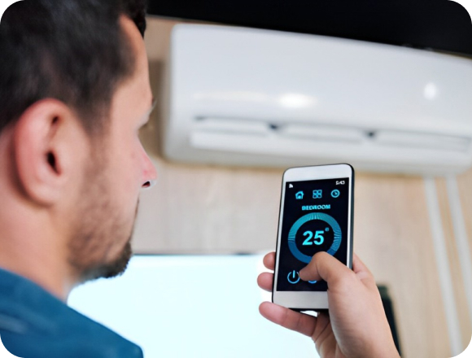

The Future of Air Conditioning: Innovations and Sustainability
As concerns about climate change and environmental sustainability continue to grow, the air conditioning industry is undergoing significant innovations to address energy efficiency, reduce carbon emissions, and promote sustainable cooling solutions. In this article, we'll explore some of the emerging trends and technologies shaping the future of air conditioning and their potential impact on energy consumption and environmental sustainability.
-
Eco-Friendly
RefrigerantsThe phase-out of ozone-depleting refrigerants, such as R-22 (Freon), has prompted the development and adoption of eco-friendly alternatives with lower global warming potential (GWP). Hydrofluorocarbon (HFC)-free refrigerants, such as hydrocarbons (e.g., R-290, R-600a) and low-GWP fluorinated gases (e.g., R-32), offer improved energy efficiency and reduced environmental impact
 -
Energy-Efficient
Cooling TechnologiesAdvancements in compressor technology, heat exchangers, and variable-speed systems are driving improvements in energy efficiency and performance. Variable refrigerant flow (VRF) systems, inverter-driven compressors, and advanced heat pump technology optimize cooling capacity and energy consumption, resulting in significant energy savings and reduced operating costs
 -
Smart Air
Conditioning SystemsThe integration of smart technologies, IoT (Internet of Things), and data analytics is transforming traditional air conditioning systems into intelligent, adaptive, and responsive solutions. Smart thermostats, occupancy sensors, and predictive analytics algorithms optimize temperature control, airflow, and energy usage based on real-time data and user preferences, enhancing comfort and efficiency
 -
Passive Cooling Design Strategies
Passive cooling design strategies, such as natural ventilation, thermal mass, shading, and cool roofs, are gaining traction as cost-effective and sustainable alternatives to traditional air conditioning. By harnessing natural resources and architectural principles, passive cooling techniques reduce reliance on mechanical cooling systems and minimize environmental impact
-
Renewable Energy Integration
The integration of renewable energy sources, such as solar photovoltaics (PV) and geothermal heat pumps, with air conditioning systems offers opportunities to reduce reliance on fossil fuels and mitigate carbon emissions. By generating clean energy onsite and leveraging natural heat exchange processes, renewable-integrated HVAC systems promote sustainability and energy independence
The future of air conditioning is characterized by innovation, sustainability, and a shift towards more
energy-efficient and environmentally friendly cooling solutions. By embracing eco-friendly refrigerants,
energy-efficient technologies, smart systems, passive design strategies, and renewable energy integration,
the air conditioning industry can play a significant role in reducing carbon emissions, mitigating climate
change, and promoting
a sustainable future.